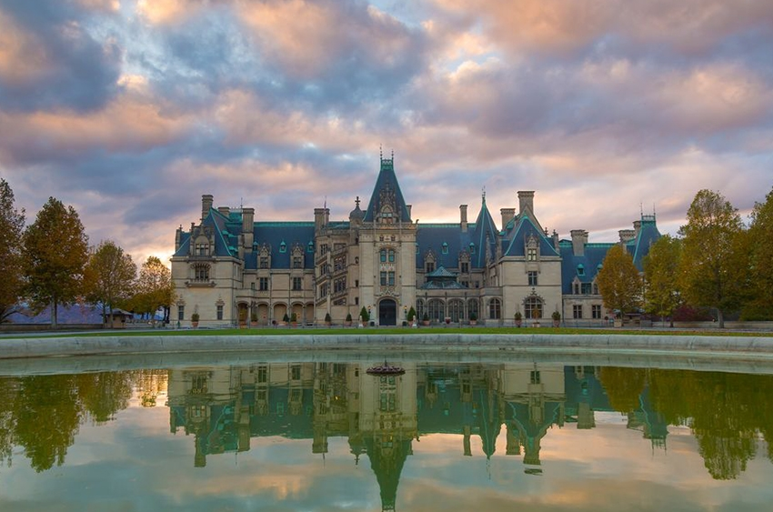
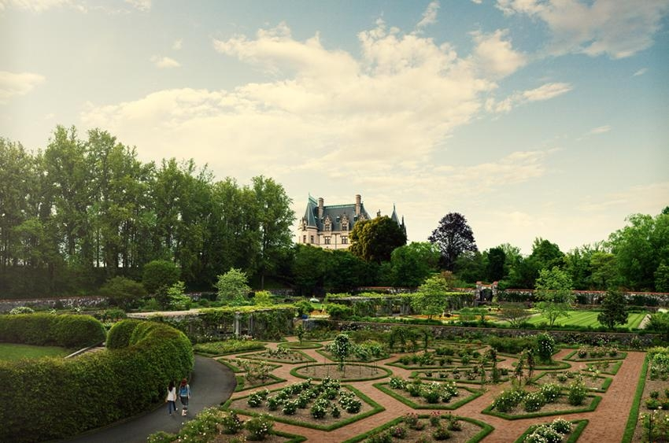
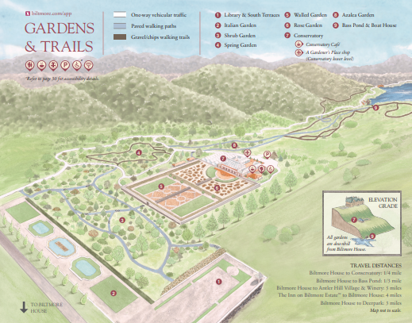
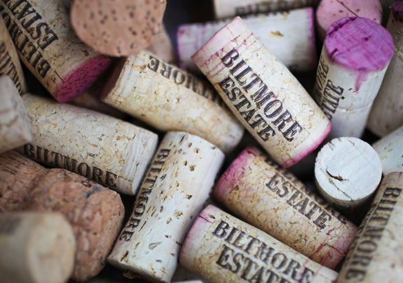
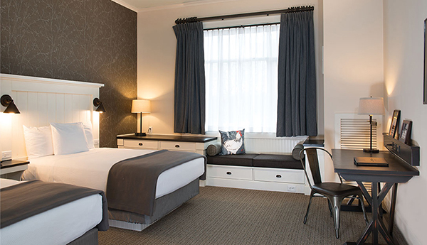

Biltmore House
The luxurious family home of George and Edith Vanderbilt is a
marvel of elegance and charm, as magnificent today as it was more
than a century ago. Your self-guided house visit spans three
floors and the basement.
Estate History
Vanderbilt’s 250-room French Renaissance chateau is a true marvel,
the largest undertaking in residential architecture. Over a
six-year period, an entire community of craftsmen comes together
to create America’s premier home and the environmental wonderland
that surrounds it.

Gardens
Stroll acres of formal and informal gardens designed by America’s
foremost landscape architect, Frederick Law Olmsted. From the
beauty of the Italian Garden to the breathtaking trees in
America’s first managed forest, Biltmore’s lush landscape is a
living tribute to Olmsted’s genius.

Estate Maps
Welcome to Biltmore, America’s largest home and grand private
estate. Nestled in the mountains of beautiful Asheville, North
Carolina, our grounds cover 8,000 acres of breathtaking scenery.

Village & Winery
A casual and relaxing way to extend the Biltmore experience,
Antler Hill Village® & Winery connects the estate’s past and
present with dining, shopping, exhibits, world-class food and
wine, and more.

Village Hotel
A comfortable, convenient starting point from which to experience
8,000 acres of Blue Ridge mountain beauty, Village Hotel is but a
short stroll from outdoor activities, the Winery, shopping, three
distinctive restaurants, and The Biltmore Legacy, home to our
popular exhibition, The Vanderbilts at Home and Abroad.